항공모함 잡담 (9/30)
게시: 2021-09-30T06:30:23+09:00
<Orlop deck의 악취와 굴> 로열 네이비의 자랑은 청결함. 매일 성마석(holystone)과 모래로 갑판 바닥을 뽀득뽀득 닦았음. 그러나 청결함은 주로 상갑판 정도에서 끝났고, 18~19세기 범선들에서는 항상 악취가 났음. 그 주된 범인은 (목욕 못하는 선원들의 몸을 제외하면) orlop deck에 저장된 닻출과, 거기서 스며나온 진흙 섞인 바닷물이 뱃바닥에 고인 bilge water. 사진1에서 붉은색으로 칠해진 부분이 가장 낮은 갑판인 orlop deck. 여기에 저장되는 닻줄에서는 왜 항상 악취가 났을까? 닻줄을 가장 많이 던지게 되는 곳은 당연히 항구. 항구는 얇음. 당연히 진흙이 있고, 특히 인간이 많이 사는 곳이니 인간의 몸에서 배출되는 온갖 오물이 바다 바닥에도 쌓임. 그래서 (위생 관념이 없던 시대엔 특히) 항구 바닥의 진흙은 더러운데 소금물에 덮혀서 잘 모르는 것 뿐. 그런 진흙과 오물에 쩔어있던 닻줄을 끌어올려서 보관해둔 orlop deck에서 냄새가 나는 것은 당연. 그리고 거기서 흘러나온 진물이 쌓인 bilge는 거의 화장실 수준. 우리나라 연해 양식장의 굴도 반드시 익혀 먹기를 권고. ** 사진2의 항공모함들이 정박한 부두의 저 불길한 흙탕물이 뭉게뭉게 피어나는 저곳은 하와이 진주만... 하와이가 저럴 정도면 다른 곳은 안봐도 비디오.
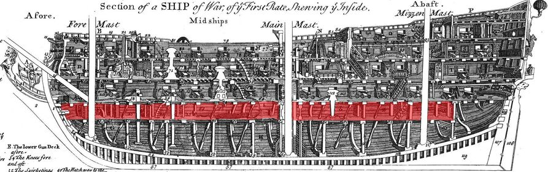 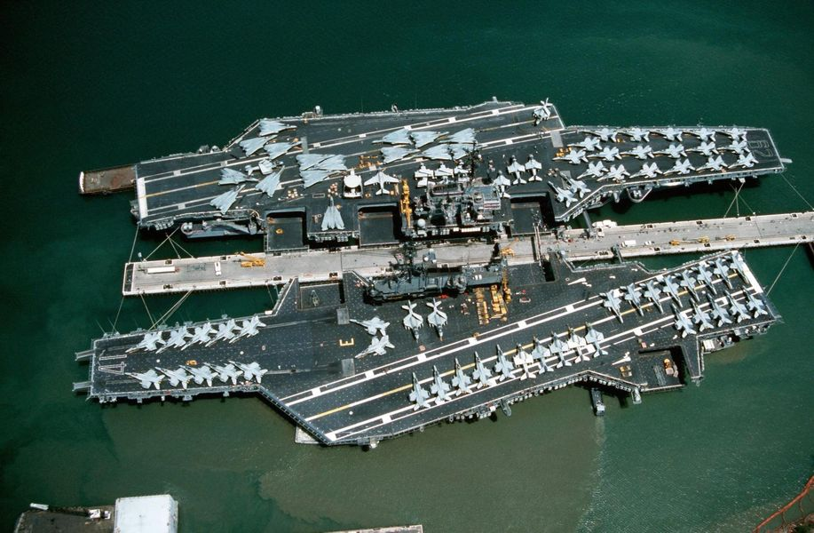
<미안하다 생선대가리다> '중국이 대만을 건드리면 3차 세계대전이다, 미국 일본 인도 다 참전해서 중국 뚜까 팬다' 등등 말은 많지만 실제로 중국이 대만은 고사하고 미군기를 직접 건드려도 아무 일이 안 일어날 뿐더러 오히려 미국이 'Sorry'라고 공식 문서를 제출함. 2001년 4월, 바보 아들 부시가 대통령일 때 베트남과 중국이 서로 영유권을 주장하는 파라셀 군도 (중국은 시사군도라고 지칭) 인근에서 중국 공군 전투기 J-8II가 미해군 정보수집기 EP-3 Aries와 충돌하는 사고(?)가 벌어짐. 중국 전투기 추락 및 조종사는 실종, 사망 추정. 미해군기의 승무원 24명은 모두 무사했지만 해남도(하이난 섬) 중국군 기지에 비상착륙, 모조리 억류됨. 상식적으로 느린 프롭 정보 수집기가 제트 전투기를 일부러라도 들이 받을 수가 없으므로 중국 공군이 과다하게 협박질을 하다가 사고를 친 것 같으나 당장 기체와 군인들이 억류된 미국은 억지춘향으로 유명한 'Letter of Two Sorries'를 공식적으로 전달하고 기체와 승무원들을 돌려받음. 여기서 미국의 문건을 보면 '니네 조종사가 죽어서 very sorry하고 영공을 침범하고 허락 안 받고 니네 기지에 착륙해서 very sorry하다' 라고 되어 있음. 그러나 영공 침범이라는 것이 해남도를 말하는 것인지 파라셀 군도를 말하는 것인지는 외교적으로 모호하게 작문되었으며, 언제나 그렇지만 sorry라는 단어가 사과(apology)를 뜻하는 것은 아니고 그냥 유감이라는 뜻이라고 사후 해명. 미해군 승무원들은 중국군이 기내에 진입할 때까지 착륙 후 15분간이나 시간이 있었고, 그 사이에 각종 기밀 자료를 미친 듯이 삭제했으나 그럼에도 많은 자료와 기밀 서류가 중국군의 손에 넘어감. 중국은 기체와 장비를 샅샅이 뜯고 맛보고 씹어본 뒤 해체한 상태로 돌려줌. 미해군 승무원들은 포로 취급을 받지는 않았고 비교적 괜찮은 대우를 받았으나 단지 주어진 식사에 '생선 대가리'가 들어있어서 먹을 수가 없었다고 진술. 다만 차후엔 점점 좋아졌다고. 아마 첫날 받은 식사에 하필 홍소어두(红烧鱼头) 같은 요리가 나온 것이 아닌가 싶은데, 우리도 미국인들 접대할 때 소머리 국밥 같은 건 함부로 주지 않아야...
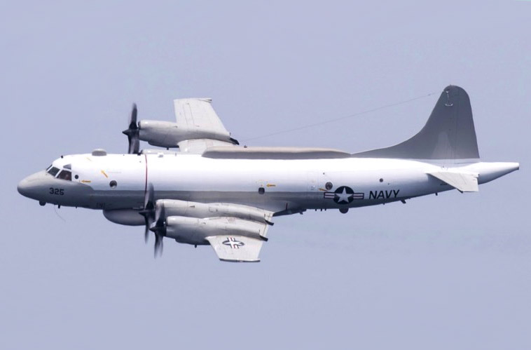 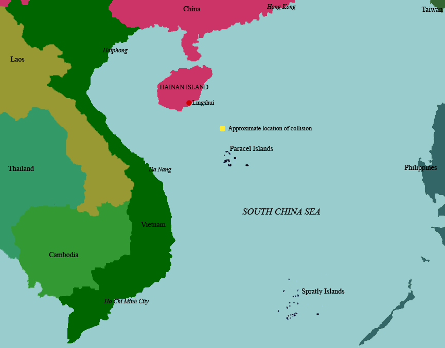 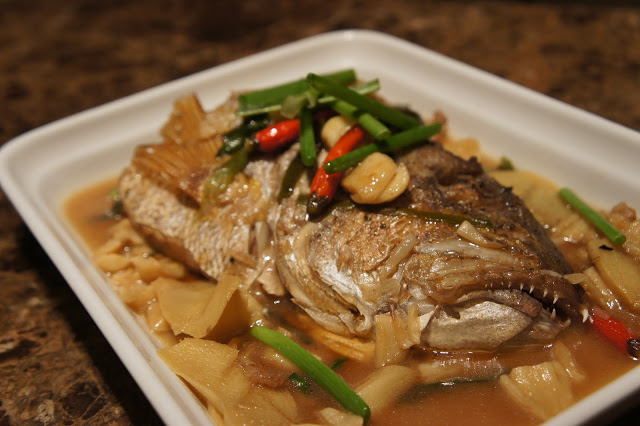
<뜻밖의 어벤저> 실망스러웠던 Devastator를 대신하여 1942년부터 도입된 뇌격기 Grumman TBF Avenger는 WW2 내내 가장 우수하고 효율적인 뇌격기로 평가받으며 야마토와 무사시 등 두 척의 수퍼전함을 격침시키는 등 큰 공을 세움. 여기에 탔던 사람 중 두번째로 유명한 사람은 당시 애송이 소위 조종사였던 아빠 부시 대통령. 일본 근해의 치치지마 섬을 공격하다 격추된 후 구조됨. 가장 유명한 사람은 폴 뉴먼. 원래 조종사로 지원했다가 색맹이라는 이유로 탈락하고 대신 어벤저 뇌격기의 무전사이자 후방 기총수로 1945년 봄 에섹스급 정규 항모 USS Bunker Hill에 배치됨. 그런데 오키나와 침공 작전 직전에 그 조종사가 이통(귀 통증)으로 인해 비행이 중단되며 폴 뉴먼도 벙커힐에서 내리게 됨. 그 직후 벙커힐은 가미가제 공격을 2방 연달아 맞고 393명 사망에 264명의 부상자를 내는 피해를 입음. (사진2)
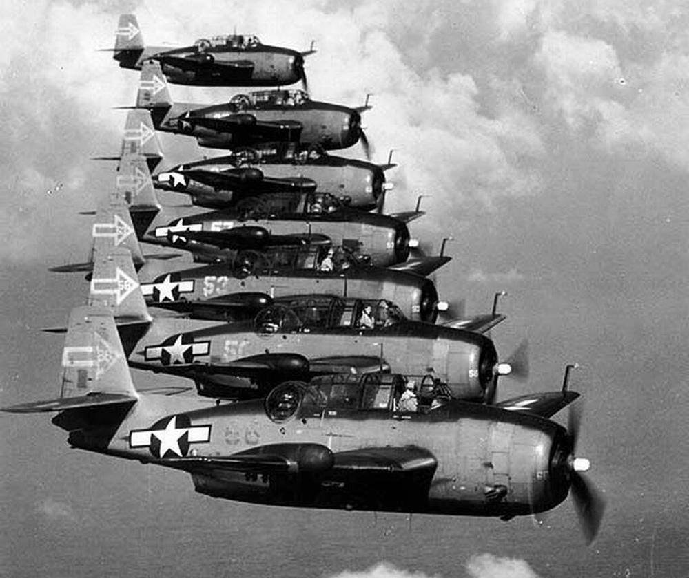 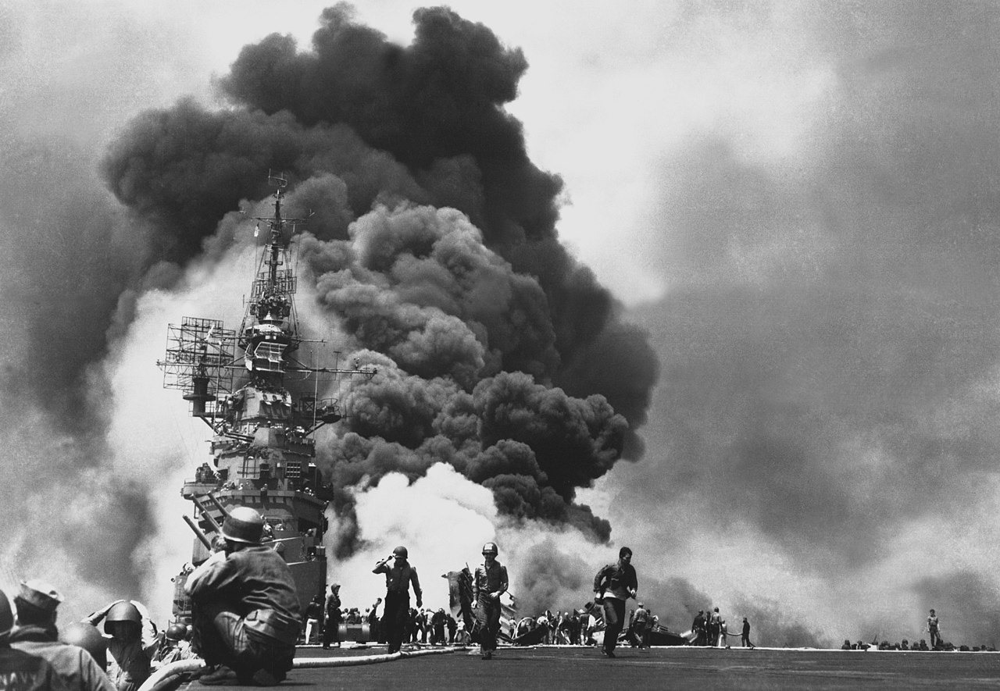 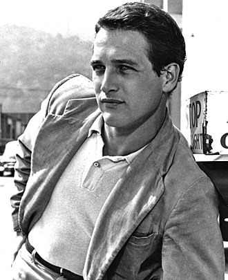
<으라차차 야마토> 1945년 4월 큐슈 남쪽 해상에서 미해군 함재기들의 다구리를 맞고 제대로 담궈진 인류 역사상 최대의 전함인 야마토는 당시 일본 해군 종군 기자들의 기록으로나 영화, 만화 등에서 수많은 미군기를 격추하며 장렬히 산화하는 것으로 나옴. 당시 탑승했다 생존한 일본군 장교 요시다에 따르면 야마토가 전복된 뒤 폭발할 때 그 충격으로도 미군기가 추락했다고 증언. (이 양반의 기록에 따라 일본에서 영화도 2번이나 만들어짐). 그러나 전체 작전에서 실제로 격추된 미군기는 10대... 그 중 구조된 승무원들이 많아서 사망자는 12명. 야마토 승조원 3,332 중 3,055 전사. 바다에 뛰어들었다 구조된 야마토 승조원들 중 일부는 미군기들이 바다에 뛰어든 일본군에게 기총소사를 했다고 증언했으나 또 다른 일부는 일본 구축함들이 물에 빠진 야마토 승조원들을 구조하는 동안 미군기들이 일본 구축함들에 대한 공격을 잠시 멈췄다고 증언.
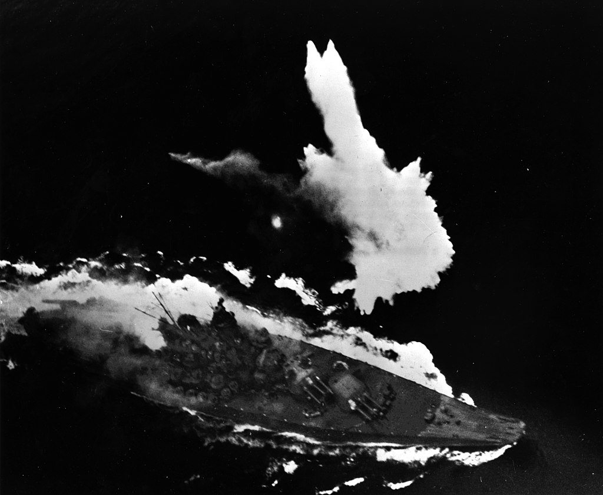
<알콜이냐 설탕이냐> 상선을 기초로 만든 호위항모(CVE)는 워낙 작고 장갑도 얇아서 탄약고나 항공유 격리도 어려웠으므로 피격시 쉽게 화재가 발생하고 큰 피해가 발생. 그래서 승조원들은 스스로를 Carrier Vessel Escort가 아니라 Combustible, Vulnerable, and Expendable (인화성 있고 취약한 소모품)이라고 부름.
이렇게 작아도 있을 것 있어서 식당 외에도 Gedunk Bar가 꼭 있었음. 지덩크 바는 아이스크림과 탄산음료, 커피와 과자 등을 파는 작은 매점인데, 자동판매기에서 물건이 툭 떨어질 때 나는 'gee-dunk'라는 의성어에서 나온 이름이라는 설이 대세. 어떻게 보면 어이가 없지만 영국 해군과는 달리 술을 전혀 주지 않았던 미해군에서는 아이스크림 등의 단 것이 승조원들 스트레스 해소에 꼭 필요했다고. ** 사진2는 USS Block Island (CVE-21, 1만6천톤, 16노트). 카나리 제도 인근에서 U-boat에게 어뢰를 맞고 격침됨. 이것이 대서양 전선에서 격침된 유일한 미해군 항모. 그런데 957명 중 6명만 사망하고 나머지는 모두 호위 구축함에게 구조됨.
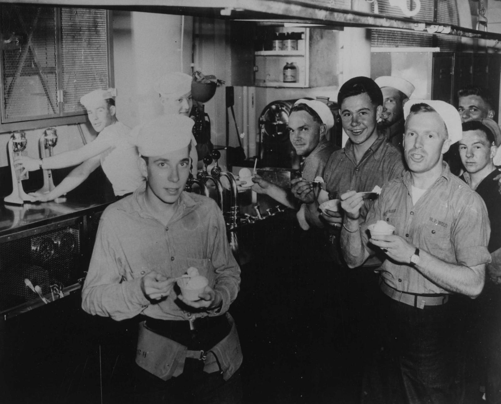 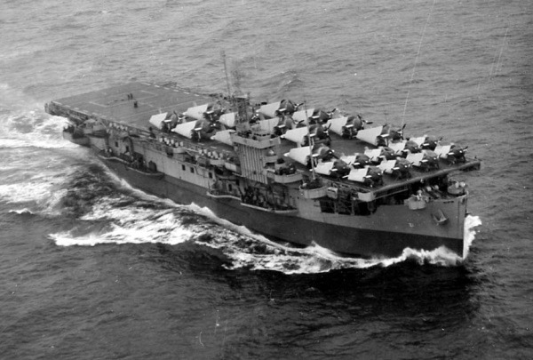
<참을성의 민족 영길리>
WW2 중 영국 공군을 속이기 위해 독일군이 나무로 가짜 활주로 가짜 전투기 가짜 차량 가짜 격납고를 구축. 이를 미리 알고 있던 영국 공군은 독일군이 가짜 공군기지를 구축하도록 몇달 동안 끈기 있게 기다린 뒤, 완공되자 거기에 딱 1개의 나무로 만든 가짜 폭탄을 투하.
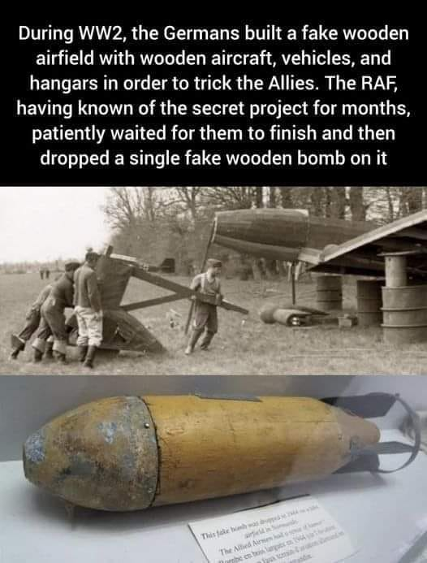
<로열 네이비에 없는 것>
밥 먹을 때 tray, 그러니까 식판이 없네요.
** 아, '맛'도 없겠구나
사진1. WW2 중 항모 HMS Furious의 식당 사진2. 올해 항모 HMS Queen Elizabeth의 식당
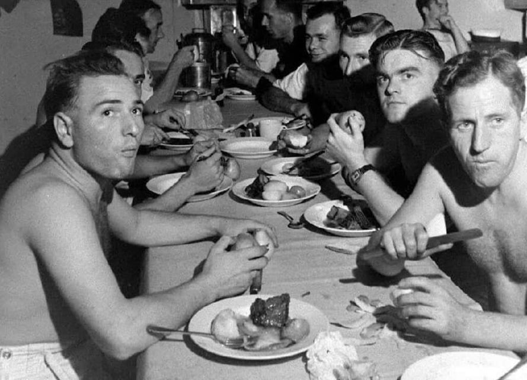 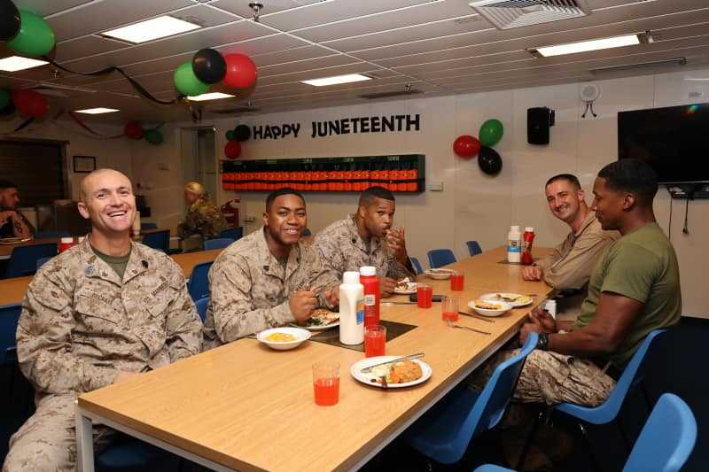